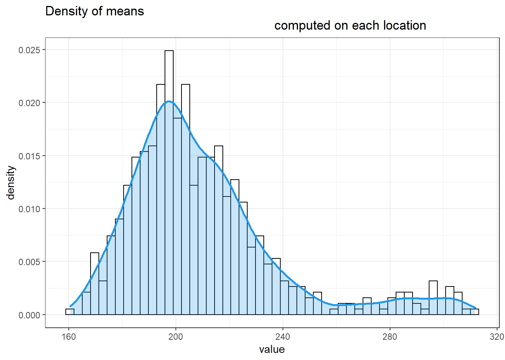

4 Clustering results
We summarize and compare the results we obtain if we center or don’t center the data.
4.1 With centering
4.1.1 Kmeans and PAM gap statistics without PCA

We can see that on the original data, neither K-means nor PAM find an optimal number of clusters that is lower than the maximum number specified.
4.1.2 Scree plot
scree_plot_pca_centered <- readRDS("../results/scree_plot_pca_centered.rds")
scree_plot_pca_centered
We apply a PCA on the centered data. The variance that is explained by the principal components indicates that, the 3 principal components already explain a lot of the appearing variance in the data. We now study the gap statistic results for K-means and K-medoids (here, meaning PAM) after applying the PCA and choosing the number of principal components to be used.
Following we compare the results of a gap statistic when the first 3 and 4 principal components are used, for K-means and PAM respectively.
4.1.3 K-means and PAM gap statistics after applying PCA
summary_plot_centered <- readRDS("../results/clustering/summary_plot_pca_centered.rds")
summary_plot_centered
The graphic shows the gap statistics resulting from K-means and PAM for 3 and 4 principal components respectively. For 3 principal components K-means and PAM settle for 12 as optimal number of clusters. For 4 principal components K-means chooses 16 and PAM the maximum number possible here 20.
4.2 Without centering
4.2.1 K-means and PAM gap statistics without PCA

As for the centered data, K-means and PAM choose the maximum number of possible clusters as optimal.
4.2.2 Scree plot
scree_plot_pca_uncentered <- readRDS("../results/scree_plot_pca_uncentered.rds")
scree_plot_pca_uncentered
We now apply a PCA on the uncentered data. The first principal component now explains a lot more variance. See https://eigenvector.com/wp-content/uploads/2020/06/EffectofCenteringonPCA.pdf
We proceed as for the centered data but use 2 and 3 principal components respectively
4.2.3 Kmean and PAM gap statistics after applying PCA
summary_plot_pca_uncentered <- readRDS("../results/clustering/summary_plot_pca_uncentered.rds")
summary_plot_pca_uncentered
The graphic shows the gap statistics resulting from K-means and PAM for 2 and 3 principal components respectively. For 2 principal components K-means and PAM both choose 3 as the optimal number of clusters, while for 3 principal components hey choose 12. The gap statistic “spike” for 2 principal components is more distinct.
4.3 Summary
We used the gap statistic as evaluation tool to find the optimal number
of clusters in our data.
It was applied by using K-means and PAM as cluster algorithms, on
the raw and centered data with and without applying a pca beforehand.
When applied without PCA, PAM and K-means found the maximal number of
clusters optimal, regardless of centering.
The results differed regarding centering the data when a PCA was applied.
When the data was centered before the PCA, we find 12 (3 principal components,
both K-means and PAM) and 16 or 20 (4 principal components, K-means
and PAM respectively) as optimal number of clusters. Without centering,
we find 3 and 12 as optimal number of clusters (2 and 3 principal components, K-means and PAM agree).
The results overall vary greatly and are sensitive to choices such as
centering.
The value of the clustering itself can be evaluated only when used in
combination with regression.
If useful, fitting different models for the different clusters should result
in a lower overall average prediction error.
We will proceed by using K-means or PAM for finding 3 clusters after applying a PCA on the uncentered data and use 2 principal components, since the results for this procedure gave more clear cut results.